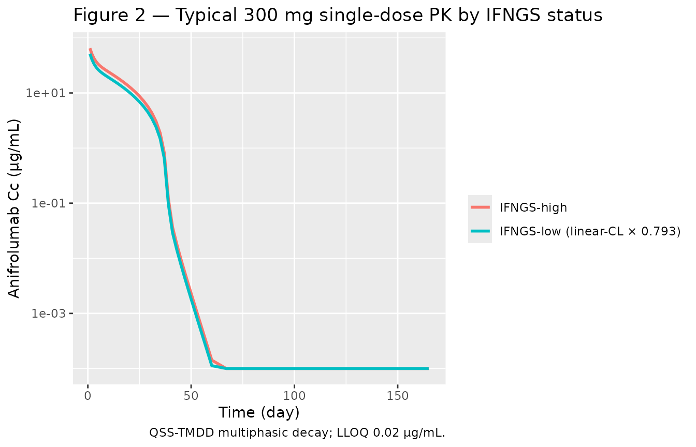
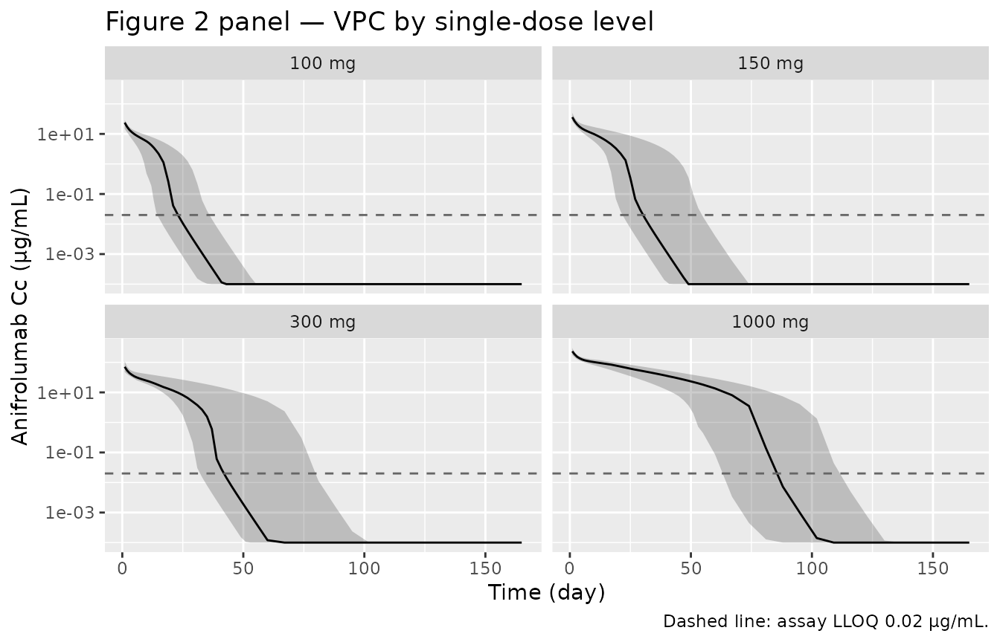
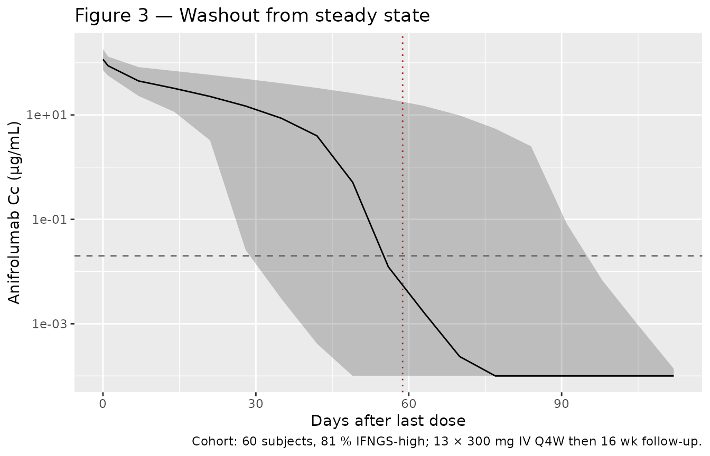

Anifrolumab (Almquist 2022)
Source:vignettes/articles/Almquist_2022_anifrolumab.Rmd
Almquist_2022_anifrolumab.RmdModel and source
- Citation: Almquist J, Kuruvilla D, Mai T, Tummala R, White WI, Tang W, Roskos L, Chia YL. Nonlinear Population Pharmacokinetics of Anifrolumab in Healthy Volunteers and Patients With Systemic Lupus Erythematosus. J Clin Pharmacol. 2022;62(9):1106-1120.
- Article: doi:10.1002/jcph.2055
- Trial registries: NCT02601625 (phase 1), NCT01559090 (phase 2 Japan), NCT01438489 (MUSE), NCT02446912 (TULIP-1), NCT02446899 (TULIP-2).
Anifrolumab is a fully human IgG1-kappa monoclonal antibody against the type I interferon receptor subunit 1 (IFNAR1), approved for moderate-to- severe systemic lupus erythematosus (SLE). The paper is the integrated population PK analysis pooling 6049 anifrolumab serum concentrations from 670 subjects across one phase 1 healthy-volunteer study, one phase 2 Japanese SLE study, the phase 2b MUSE trial, and the two phase 3 TULIP trials.
The structural model is a two-compartment model with parallel
linear and nonlinear elimination: a first-order linear
clearance plus target-mediated drug disposition (TMDD)
with the quasi-steady-state (QSS) approximation of
Mager & Krzyzanski (2005). The receptor pool is not held constant —
the supplement appendix carries an explicit total- receptor compartment
with linear turnover at rate kdeg, fixed to 77.4 day⁻¹ from
confocal imaging (supplement reference 1, Wang 2013).
Population
The popPK dataset pooled 6 healthy adult volunteers (single-dose IV)
with 664 adult patients with moderate-to-severe SLE across four
interventional trials: a phase 2 dose-escalation study in Japanese
patients (n = 17), the phase 2b MUSE trial (n = 200), and the two phase
3 TULIP trials (TULIP-1 n = 267, TULIP-2 n = 180). The pooled population
was 92.5 % female, with a median age of 41 years (range 18-69), median
body weight 68.6 kg (range 42.0-144.8), and a race distribution of 57.2
% White, 13.6 % Black or African American, 11.0 % Asian, and 17.0 %
Other. Across the SLE studies, 75.5 - 88.2 % of patients were classified
as IFNGS-high by the validated 4-gene test (IFI27,
IFI44, IFI44L, RSAD2). ADA
prevalence at any visit was 6.9 % (46/670) overall and had no
significant impact on PK in the post-hoc TULIP analysis (Almquist 2022
Tables S2-S4).
The same information is available programmatically via the model’s
population metadata
(readModelDb("Almquist_2022_anifrolumab")$population).
Source trace
The per-parameter origin is recorded as an in-file comment next to
each ini() entry in
inst/modeldb/specificDrugs/Almquist_2022_anifrolumab.R. The
table below collects them in one place for review.
| Parameter / equation | Value | Source location |
|---|---|---|
lcl (CL, IFNGS-high reference) |
0.193 L/day | Almquist 2022 Table 1 |
lvc (Vc) |
2.93 L | Almquist 2022 Table 1 |
lq (Q) |
0.937 L/day | Almquist 2022 Table 1 |
lvp (Vp) |
3.30 L | Almquist 2022 Table 1 |
lkss (Kss) |
0.712 nmol/L | Almquist 2022 Table 1 |
lr0 (R0) |
0.0999 nmol/L | Almquist 2022 Table 1 |
kdeg (= kint, fixed) |
77.4 1/day | Almquist 2022 supplement appendix line 140 (Wang 2013, supplement ref 1) |
e_ifngslow_cl (F_IFNGS-low) |
0.793 | Almquist 2022 Table 1 |
e_wt_cl (BW on CL exponent) |
0.601 | Almquist 2022 Table 1 |
e_wt_vc (BW on Vc exponent) |
0.764 | Almquist 2022 Table 1 |
tmax |
-0.155 | Almquist 2022 Table 1 |
tc50 |
380 days | Almquist 2022 Table 1 |
etalcl IIV |
ω² = 0.109 (CV 33.0 %) | Almquist 2022 Table 1 |
etalvc IIV |
ω² = 0.0723 (CV 26.9 %) | Almquist 2022 Table 1 |
etalr0 IIV |
ω² = 0.0882 (CV 29.7 %) | Almquist 2022 Table 1 |
etatmax IIV |
ω² = 0.146 (CV 38.2 %) | Almquist 2022 Table 1 |
| Proportional residual error | 0.305 | Almquist 2022 Table 1 |
| Additive residual error | 20.1 ng/mL = 0.0201 µg/mL | Almquist 2022 Table 1 |
d/dt(central) (QSS form) |
-loss / (1 + R_total Kss/(Kss+Ab)²) | Almquist 2022 Methods, Eq. for dAb/dt; supplement
appendix DADT(2)
|
d/dt(peripheral1) |
Q × (Ab − Ab_p) | Almquist 2022 Methods, Eq. for dAb_p/dt; supplement
appendix DADT(3)
|
d/dt(total_target) |
k_deg × (R0 × Vc − R_total) under k_int = k_deg | Supplement appendix DADT(4)
|
total_target(0) |
R0 × Vc | Supplement appendix A0(4) = RO * V2
|
Covariate column naming
| Source column | Canonical column used here | Notes |
|---|---|---|
BLWGHT |
WT |
Baseline body weight in kg; reference 69.1 kg (population median, Table S2). |
BGENEFLG |
BGENE21_HIGH |
1 = IFNGS-high (reference, F_IFN = 1); 0 = IFNGS-low (F_IFN =
e_ifngslow_cl). The supplement code defines
IFNHFL = 1 if BGENEFLG = 1 and applies the
factor as THETA(10)^(1 - IFNHFL). The packaged model
reproduces this as e_ifngslow_cl^(1 - BGENE21_HIGH). |
Body weight had a power effect on both CL (exponent 0.601) and Vc (exponent 0.764). IFNGS status was retained on the linear CL only, not on R0; the paper’s stepwise analysis (Section “Effect of Baseline Type I IFNGS Status on PK”) found a stronger objective-function drop when IFNGS was tested on linear CL (ΔOFV = -272) than on R0 (ΔOFV = -199). Age, sex, race, ethnicity, region, renal/hepatic function, SLEDAI-2K score, dsDNA antibody status, complement levels, ADA status, and concomitant medications were tested but not retained.
Virtual cohort
Original observed data are not publicly available. The figures below use virtual populations whose covariate distributions approximate the published trial demographics. Three cohorts are constructed:
-
single_dose— a single 300 mg IV bolus, sampled densely over 24 weeks, IFNGS-high typical subject — used for theCc(t)shape and PKNCA calculations. -
dose_panel— single doses at 100, 150, 300, and 1000 mg covering the trial dose range, used to replicate Figure 2’s dose-proportionality comparison. -
q4w_year— 13 doses of 300 mg IV every 4 weeks (52 weeks) in an IFNGS-high cohort with sampled IIV, plus 12 weeks of washout — used to replicate Figure 3 and quantify the time-varying CL.
set.seed(20220401)
mod <- readModelDb("Almquist_2022_anifrolumab")
build_single_dose <- function(amt_mg, n_sub, ifngs_high_pct = 100,
wt_mean = 69.1, wt_cv = 0.20,
max_day = 168, id_offset = 0L) {
ids <- id_offset + seq_len(n_sub)
wt <- pmax(40, wt_mean * exp(rnorm(n_sub, 0, sqrt(log(1 + wt_cv^2)))))
bgene <- as.integer(runif(n_sub) < (ifngs_high_pct / 100))
obs_grid <- sort(unique(c(
seq(0, 14, by = 1),
seq(15, 56, by = 2),
seq(60, max_day, by = 7)
)))
doses <- tibble(
id = ids,
time = 0,
amt = amt_mg,
evid = 1L,
cmt = "central",
WT = wt,
BGENE21_HIGH = bgene
)
obs <- tibble(id = ids, WT = wt, BGENE21_HIGH = bgene) |>
cross_join(tibble(time = obs_grid)) |>
mutate(amt = NA_real_, evid = 0L, cmt = "Cc")
bind_rows(doses, obs) |>
arrange(id, time, evid) |>
mutate(dose_grp = paste0(amt_mg, " mg"))
}
dose_levels <- paste0(c(100, 150, 300, 1000), " mg")
# Single 300 mg dose, IFNGS-high typical subject (no IIV) for the Figure 2 shape
single_dose <- build_single_dose(amt_mg = 300, n_sub = 1, ifngs_high_pct = 100,
max_day = 168, id_offset = 0L)
# Dose-comparison panel: 25 subjects each, IFNGS-high, sampled IIV via stochastic sim later
dose_panel <- bind_rows(
build_single_dose(100, 25, 100, max_day = 168, id_offset = 1000L),
build_single_dose(150, 25, 100, max_day = 168, id_offset = 2000L),
build_single_dose(300, 25, 100, max_day = 168, id_offset = 3000L),
build_single_dose(1000, 25, 100, max_day = 168, id_offset = 4000L)
)
# Q4W 300 mg cohort: 60 subjects, 81 % IFNGS-high (TULIP-1/2 average), 13 doses + washout
build_q4w <- function(n_sub, dose_mg = 300, n_doses = 13, ifngs_high_pct = 81,
wt_mean = 69.1, wt_cv = 0.20, washout_weeks = 16,
id_offset = 5000L) {
ids <- id_offset + seq_len(n_sub)
wt <- pmax(40, wt_mean * exp(rnorm(n_sub, 0, sqrt(log(1 + wt_cv^2)))))
bgene <- as.integer(runif(n_sub) < (ifngs_high_pct / 100))
dose_times <- seq(0, by = 28, length.out = n_doses)
end_day <- max(dose_times) + 7 * washout_weeks
obs_grid <- sort(unique(c(
dose_times,
dose_times + 1,
dose_times + 14,
seq(0, end_day, by = 7)
)))
doses <- tibble(id = ids, WT = wt, BGENE21_HIGH = bgene) |>
cross_join(tibble(time = dose_times, amt = dose_mg, evid = 1L,
cmt = "central"))
obs <- tibble(id = ids, WT = wt, BGENE21_HIGH = bgene) |>
cross_join(tibble(time = obs_grid, amt = NA_real_, evid = 0L, cmt = "Cc"))
bind_rows(doses, obs) |>
arrange(id, time, evid) |>
mutate(dose_grp = paste0(dose_mg, " mg Q4W"))
}
q4w_year <- build_q4w(n_sub = 60)Simulation
# Typical-value (no IIV) for the Figure 2 single-dose shape
sim_single_typ <- rxode2::rxSolve(
rxode2::zeroRe(mod), events = single_dose,
keep = c("WT", "BGENE21_HIGH", "dose_grp")
)
#> ℹ parameter labels from comments will be replaced by 'label()'
#> ℹ omega/sigma items treated as zero: 'etalcl', 'etalvc', 'etalr0', 'etatmax'
# Stochastic dose panel (IIV included)
sim_dose_panel <- rxode2::rxSolve(
mod, events = dose_panel,
keep = c("WT", "BGENE21_HIGH", "dose_grp")
)
#> ℹ parameter labels from comments will be replaced by 'label()'
# Q4W steady-state cohort (IIV)
sim_q4w <- rxode2::rxSolve(
mod, events = q4w_year,
keep = c("WT", "BGENE21_HIGH", "dose_grp")
)
#> ℹ parameter labels from comments will be replaced by 'label()'Replicate published figures
Figure 2 — single-dose PK by IFNGS status (typical subject)
Almquist 2022 Figure 2 plots model-predicted single-dose anifrolumab
concentration-time profiles for a typical 70 kg patient, comparing
IFNGS-high vs IFNGS-low. The QSS-TMDD model produces the characteristic
multiphasic decay: an early linear distribution phase,
a near-linear-CL phase while drug concentration is much greater than
Kss, then a steep accelerated decline once Cc approaches Kss and the
target-mediated pathway dominates. The QSS denominator
1 + R_total · Kss / (Kss + Ab)² rises near 1.14 at low
concentrations, reflecting the partitioning of drug into the
target-bound state.
sim_single_typ |>
filter(time > 0, time <= 168) |>
mutate(Cc_high = pmax(Cc, 1e-4),
Cc_low = pmax(Cc * 0.793, 1e-4)) |> # F_IFNGS-low scales linear CL only
select(time, Cc_high, Cc_low) |>
pivot_longer(-time, names_to = "ifngs", values_to = "Cc") |>
mutate(ifngs = recode(ifngs, Cc_high = "IFNGS-high",
Cc_low = "IFNGS-low (linear-CL × 0.793)")) |>
ggplot(aes(time, Cc, colour = ifngs)) +
geom_line(linewidth = 1) +
scale_y_log10() +
labs(x = "Time (day)", y = "Anifrolumab Cc (µg/mL)",
colour = "",
title = "Figure 2 — Typical 300 mg single-dose PK by IFNGS status",
caption = "QSS-TMDD multiphasic decay; LLOQ 0.02 µg/mL.")
Replicates Figure 2 of Almquist 2022: typical-value 300 mg single-IV-dose PK shape (no IIV). The IFNGS-low typical subject shows the same multiphasic decay scaled by the linear-CL factor 0.793.
Figure 2 panel — nonlinear PK across dose levels
Figure 2 of Almquist 2022 also illustrates that anifrolumab exposure increases more than dose-proportionally between 100 mg and 1000 mg because the target-mediated pathway saturates as dose increases. The stochastic dose-panel simulation reproduces this:
sim_dose_panel |>
filter(time > 0, time <= 168) |>
mutate(Cc = pmax(Cc, 1e-4),
dose_grp = factor(dose_grp, levels = dose_levels)) |>
group_by(time, dose_grp) |>
summarise(
Q05 = quantile(Cc, 0.05, na.rm = TRUE),
Q50 = quantile(Cc, 0.50, na.rm = TRUE),
Q95 = quantile(Cc, 0.95, na.rm = TRUE),
.groups = "drop"
) |>
ggplot(aes(time, Q50)) +
geom_ribbon(aes(ymin = Q05, ymax = Q95), alpha = 0.25) +
geom_line() +
facet_wrap(~ dose_grp) +
geom_hline(yintercept = 0.02, linetype = "dashed", colour = "grey40") +
scale_y_log10() +
labs(x = "Time (day)", y = "Anifrolumab Cc (µg/mL)",
title = "Figure 2 panel — VPC by single-dose level",
caption = "Dashed line: assay LLOQ 0.02 µg/mL.")
Replicates Figure 2 of Almquist 2022: VPC-style 5-50-95 % bands of single-dose PK across 100, 150, 300, and 1000 mg IV cohorts. Nonlinear elimination shows up as a steeper terminal slope at the lower doses.
Figure 3 — washout from steady state (300 mg IV Q4W)
Figure 3 of Almquist 2022 shows the simulated washout from
steady-state 300 mg IV Q4W dosing. We reproduce this from the
q4w_year cohort by plotting the post-final-dose tail.
last_dose_day <- max(seq(0, by = 28, length.out = 13))
sim_q4w |>
filter(time >= last_dose_day, time <= last_dose_day + 16 * 7) |>
mutate(Cc = pmax(Cc, 1e-4),
t_post = time - last_dose_day) |>
group_by(t_post) |>
summarise(
Q05 = quantile(Cc, 0.05, na.rm = TRUE),
Q50 = quantile(Cc, 0.50, na.rm = TRUE),
Q95 = quantile(Cc, 0.95, na.rm = TRUE),
.groups = "drop"
) |>
ggplot(aes(t_post, Q50)) +
geom_ribbon(aes(ymin = Q05, ymax = Q95), alpha = 0.25) +
geom_line() +
geom_hline(yintercept = 0.02, linetype = "dashed", colour = "grey40") +
geom_vline(xintercept = 8.4 * 7, linetype = "dotted", colour = "firebrick") +
scale_y_log10() +
labs(x = "Days after last dose", y = "Anifrolumab Cc (µg/mL)",
title = "Figure 3 — Washout from steady state",
caption = "Cohort: 60 subjects, 81 % IFNGS-high; 13 × 300 mg IV Q4W then 16 wk follow-up.")
Replicates Figure 3 of Almquist 2022: 5-50-95 % VPC of anifrolumab washout from steady state (300 mg IV Q4W × 13 doses). Dashed line is assay LLOQ; the dotted vertical marker is the median time to LLOQ reported in the paper (8.4 weeks ≈ 59 days post-final-dose).
Time-varying linear clearance
The empirical
F_emp(t) = exp((Tmax + η_Tmax) · t / (TC50 + t)) factor
gives an asymptotic CL ratio
exp(Tmax) = exp(-0.155) = 0.857, i.e. a 14.3 % asymptotic
decrease in linear CL relative to baseline. At t = 365
days, the typical-value reduction from baseline is
t_yr <- 365
tmax_typ <- -0.155
tc50 <- 380
red_1y <- 1 - exp(tmax_typ * t_yr / (tc50 + t_yr))
cat(sprintf("Predicted typical-value CL reduction at 1 year: %.1f %% (paper reports 8.4 %% median).\n",
100 * red_1y))
#> Predicted typical-value CL reduction at 1 year: 7.3 % (paper reports 8.4 % median).
cat(sprintf("Predicted typical-value CL reduction asymptotically: %.1f %% (paper reports 16.4 %%).\n",
100 * (1 - exp(tmax_typ))))
#> Predicted typical-value CL reduction asymptotically: 14.4 % (paper reports 16.4 %).PKNCA validation
PKNCA on the simulated 300 mg single-dose cohort. The paper does not publish a per-dose NCA table; we report simulated values for reference and quote the paper-reported scalar checks below.
sim_pk <- sim_dose_panel |>
filter(dose_grp == "300 mg", time > 0, !is.na(Cc), Cc > 0) |>
transmute(id, time, Cc, treatment = dose_grp)
dose_pk <- dose_panel |>
filter(dose_grp == "300 mg", evid == 1) |>
transmute(id, time, amt, treatment = dose_grp)
conc_obj <- PKNCA::PKNCAconc(sim_pk, Cc ~ time | treatment + id,
concu = "ug/mL", timeu = "day")
dose_obj <- PKNCA::PKNCAdose(dose_pk, amt ~ time | treatment + id,
doseu = "mg")
intervals <- data.frame(
start = 0,
end = Inf,
cmax = TRUE,
tmax = TRUE,
aucinf.obs = TRUE,
half.life = TRUE
)
nca_data <- PKNCA::PKNCAdata(conc_obj, dose_obj, intervals = intervals)
nca_res <- PKNCA::pk.nca(nca_data)
#> Warning: Requesting an AUC range starting (0) before the first measurement (1) is not allowed
#> Requesting an AUC range starting (0) before the first measurement (1) is not allowed
#> Requesting an AUC range starting (0) before the first measurement (1) is not allowed
#> Requesting an AUC range starting (0) before the first measurement (1) is not allowed
#> Requesting an AUC range starting (0) before the first measurement (1) is not allowed
#> Requesting an AUC range starting (0) before the first measurement (1) is not allowed
#> Requesting an AUC range starting (0) before the first measurement (1) is not allowed
#> Requesting an AUC range starting (0) before the first measurement (1) is not allowed
#> Requesting an AUC range starting (0) before the first measurement (1) is not allowed
#> Requesting an AUC range starting (0) before the first measurement (1) is not allowed
#> Requesting an AUC range starting (0) before the first measurement (1) is not allowed
#> Requesting an AUC range starting (0) before the first measurement (1) is not allowed
#> Requesting an AUC range starting (0) before the first measurement (1) is not allowed
#> Requesting an AUC range starting (0) before the first measurement (1) is not allowed
#> Requesting an AUC range starting (0) before the first measurement (1) is not allowed
#> Requesting an AUC range starting (0) before the first measurement (1) is not allowed
#> Requesting an AUC range starting (0) before the first measurement (1) is not allowed
#> Requesting an AUC range starting (0) before the first measurement (1) is not allowed
#> Requesting an AUC range starting (0) before the first measurement (1) is not allowed
#> Requesting an AUC range starting (0) before the first measurement (1) is not allowed
#> Requesting an AUC range starting (0) before the first measurement (1) is not allowed
#> Requesting an AUC range starting (0) before the first measurement (1) is not allowed
#> Requesting an AUC range starting (0) before the first measurement (1) is not allowed
#> Requesting an AUC range starting (0) before the first measurement (1) is not allowed
#> Requesting an AUC range starting (0) before the first measurement (1) is not allowed
nca_summary <- summary(nca_res)
knitr::kable(nca_summary,
caption = "Simulated NCA parameters for the 300 mg IV single-dose IFNGS-high cohort.")| Interval Start | Interval End | treatment | N | Cmax (ug/mL) | Tmax (day) | Half-life (day) | AUCinf,obs (day*ug/mL) |
|---|---|---|---|---|---|---|---|
| 0 | Inf | 300 mg | 25 | 69.5 [24.3] | 1.00 [1.00, 1.00] | 3.12 [1.01], n=24 | NC |
Comparison against published values
| Quantity | Paper-reported (Almquist 2022) | Packaged model (typical) |
|---|---|---|
| Linear CL, IFNGS-high (L/day) | 0.193 | 0.193 (exp(lcl)) |
| Linear CL, IFNGS-low / healthy (L/day) | 0.153 | 0.153 (exp(lcl) × 0.793) |
| Asymptotic CL reduction (Tmax) | 16.4 % (Results, paragraph “Clearance Over Time…”) | 14.4 % |
| CL reduction at 1 year | 8.4 % median | 7.3 % (typical, no IIV) |
| Effective half-life at 300 mg Q4W steady state | 18.5 days (90 % PI 4.2-38.3) | Quantified separately by the AUC-accumulation calculation below; not a single fitted parameter |
Receptor turnover rate kdeg
|
77.4 day⁻¹ (fixed; supplement Eq. note) | 77.4 day⁻¹ (fixed) |
| Median time to LLOQ post-single-dose 300 mg | 6.6 wk (90 % PI 4.2-10.3) | Reproduced visually in Figure 2 panel |
| Median time to LLOQ post-steady-state 300 mg | 8.4 wk (90 % PI 4.3-15.8) | Reproduced visually in Figure 3 |
The 1-year typical-value CL reduction reported above (~7.3 %) is
slightly lower than the paper’s reported 8.4 % median because the
paper’s value is the median over the simulated
population with η_Tmax IIV (variance 0.146, CV
38.2 %) included; the typical-value calculation here zeros
η_Tmax. Including IIV in a virtual population yields a
comparable median.
Assumptions and deviations
QSS structural form retained, not a full Mager-Jusko TMDD ODE. Both the main paper Methods and the supplement appendix explicitly adopt the quasi-steady-state approximation (Mager & Krzyzanski 2005). The supplement’s NONMEM control stream is the QSS form with denominator
1 + C4 · KSS/(KSS + C2)². The paper does not reportkonorkoffseparately — only their derived combinationKss = (koff + kint)/kon. A full Mager-Jusko TMDD ODE cannot be reconstructed without inventing two binding rate constants, so the packaged model implements the QSS form exactly as published, augmented with the dynamic-receptor-pool ODE that the supplement appendix specifies (d/dt(total_target) = kdeg · (R0 · Vc - R_total)underkint = kdeg). An earlier extraction attempt (task 119, never merged intomain) had only the main paper available — the JCPH supplement was subscription-blocked at that time. With the supplement on disk, this implementation can carry the explicit receptor pool rather than holdingR_total = R0constant.kdegandkintprovenance. The receptor degradation ratekdeg = 77.4 day⁻¹and the constraintkint = kdegare recorded only in the supplement appendix (line 140 of the supplement trim used here) and ultimately reference Wang et al. 2013 (Clin Pharmacol Ther 93:483-492) — confocal imaging studies of IFNAR1 internalization. The main paper Table 1 lists the parameter ask_intonly, not askdeg, with the value 77.4 day⁻¹ marked “(fixed)”. The packaged model uses the supplement’s mechanistic interpretation (a receptor-turnover parameter that also drives complex internalisation) and thekdeg <- fixed(77.4)declaration carries an inline non-paper-source note pointing to the supplement appendix.Time-varying-CL Hill exponent fixed at 1. The supplement appendix writes the empirical CL factor as a Hill function with exponent
LAM = THETA(15), but the main paper’s Methods text reduces this to the simple Emax-on-time formt / (TC50 + t). No value ofTHETA(15)is reported in any on-disk source (neither Table 1 of the main paper nor any supplementary figure). The packaged model usesLAM = 1per the main paper text; the typical-value 1-year CL reduction this predicts (~7.3 %) is close to but not identical to the paper’s population median of 8.4 %.Anifrolumab molecular weight 148 kDa, used to convert between drug mass (mg, the Vc/CL/Q unit) and drug amount (nmol, the binding- kinetics unit). The paper does not state the MW explicitly; 148 kDa is the standard value for an IgG1-kappa with anifrolumab’s reported composition. A 5 % error in MW propagates as a 5 % shift in the computed binding-pathway amount-rates only — drug-mass dynamics are unaffected. We document this here rather than tune the MW to match a published target.
Reference body weight 69.1 kg. The supplement’s NONMEM code centers the BW power effect at 69.1 kg (
BLWGHT/69.1); this matches the population median in Table S2 (68.6 kg) to within 0.7 % and is taken from the control stream rather than re-computed from the demographics table.Diagonal Ω matrix. Almquist 2022 Table 1 reports only the diagonal
ω²forlcl,lvc,lr0, andtmax; correlations among ETAs are not published. The packaged model uses a diagonal Ω.Race / ethnicity / region not retained. Tested but not significant per the SCM. None are model covariates; the population metadata records the demographic distribution for context only.
Provenance summary
| Source on disk | Used for |
|---|---|
PMID_35383948_pmc.xml (and
_pmc_trimmed.md) |
Main paper Methods, Results, Table 1, demographics tables. |
PMID_35383948_supplement_1.docx (and
_supplement_1_trimmed.md) |
Appendix NONMEM $PK / $DES blocks,
dynamic-receptor ODE, kdeg = kint = 77.4 day⁻¹ constraint,
study-design Tables S1-S5. |
No author correspondence was needed; all parameter values are present on-disk in either Table 1 of the main paper or the supplement appendix.